<!DOCTYPE html>
<html lang="en">
<head>
<meta charset="UTF-8">
<meta name="viewport" content="width=device-width,initial-scale=1">
<title>6.8 Area of a Triangle — Measuring Space Perimeter and Area</title>
<meta name="description" content="Class 9 Mathematics · Measuring Space Perimeter and Area · 6.8 Area of a Triangle">
<link rel="icon" href="data:image/svg+xml,<svg xmlns='http://www.w3.org/2000/svg' viewBox='0 0 100 100'><text y='.9em' font-size='90'>📘</text></svg>">
<link rel="stylesheet" href="../../../assets/book.css">
<link rel="stylesheet" href="https://cdn.jsdelivr.net/npm/katex@0.16.11/dist/katex.min.css" crossorigin="anonymous">
</head>
<body>
<header class="topbar">
<div class="topbar-in">
  <div class="crumb">
    <span class="c1"><a href="../../../index.html">Library</a> · <a href="../../index.html">Class 9 Mathematics</a></span>
    <span class="c2">Measuring Space Perimeter and Area · 6.8 Area of a Triangle</span>
  </div>
  <a class="tb-btn" data-nav="prev" href="../../06-measuring-space-perimeter-and-area/08-area-of-a-parallelogram-6.7/index.html" title="6.7 Area of a Parallelogram">←</a>
  <details class="drawer"><summary class="tb-btn" title="Sections in this chapter">☰</summary>
<div class="drawer-panel"><div class="dh">Measuring Space Perimeter and Area</div><a href="../01-chapter-opener/index.html">Chapter opener</a><a href="../02-perimeter-of-a-shape-6.1/index.html">6.1 Perimeter of a Shape</a><a href="../03-perimeter-of-a-circle-the-c-d-ratio-6.2/index.html">6.2 Perimeter of a Circle — The C / D Ratio</a><a href="../04-length-of-an-arc-of-a-circle-6.4/index.html">6.4 Length of an Arc of a Circle</a><a href="../05-problems-puzzles-and-paradoxes-on-perimeter-6.5/index.html">6.5 Problems, Puzzles, and Paradoxes on Perimeter</a><a href="../06-exercise-6.1/index.html">Exercise 6.1</a><a href="../07-area-of-a-rectangle-6.6/index.html">6.6 Area of a Rectangle</a><a href="../08-area-of-a-parallelogram-6.7/index.html">6.7 Area of a Parallelogram</a><a href="../09-area-of-a-triangle-6.8/index.html" aria-current="page">6.8 Area of a Triangle</a><a href="../10-squaring-a-rectangle-6.9/index.html">6.9 Squaring a Rectangle</a><a href="../11-exercise-6.2/index.html">Exercise 6.2</a><a href="../12-area-of-a-circle-6.10/index.html">6.10 Area of a Circle</a><a href="../13-exercise-6.3/index.html">Exercise 6.3</a></div></details>
  <a class="tb-btn" data-nav="next" href="../../06-measuring-space-perimeter-and-area/10-squaring-a-rectangle-6.9/index.html" title="6.9 Squaring a Rectangle">→</a>
  <button class="tb-btn" data-theme-toggle title="Toggle light / dark" aria-label="Toggle light or dark theme">◐</button>
</div>
<div class="progress"><span style="width:74.7%"></span></div>
</header>
<main class="wrap">
<div class="sec-head">
  <p class="eyebrow"><a href="../index.html">Chapter 6 · Measuring Space Perimeter and Area</a></p>
  <h1>6.8 Area of a Triangle</h1>
  <p class="sec-meta">Textbook pages 15–23 · 17 figures</p>
</div>
<article class="prose">
<p>Next, we work out a formula for the area of a triangle. (You have seen the formula in Grade 8, but we will go over the idea again, briefly.) One way to proceed is to first consider the case of a right-angled triangle and then other triangles. In both cases, we enclose the triangle in a rectangle; then we use the formula for area of a rectangle. (See Fig. 6.20A. Notice that \(FG = FJ + JG\) and so \(b = b_{1} + b_{2}.)\) We find as a result that the area of a triangle with base b units and height h units is half the area of the rectangle with base b units and height h units. That is, the area is equal to \(\frac{1}{2}\) bh sq. units. You may wonder, like earlier, is there a gap in our argument? What would we do if angle EFG is obtuse and the triangle were shaped like triangle EFG in Fig. 6.20B? Please work out the answer to this question.</p>
<figure class="fig">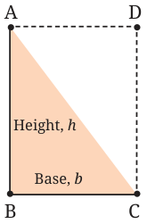<figcaption>Fig. 6.20A: Area of a triangle Fig. 6.20B</figcaption></figure>
<figure class="fig">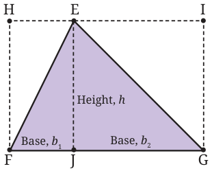</figure>
<figure class="fig side-fig">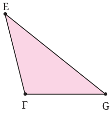</figure>
<p>A nicer way of working out the formula for the area of a triangle is by seeing that two congruent copies of a triangle can be fitted together to make a parallelogram.</p>
<figure class="fig">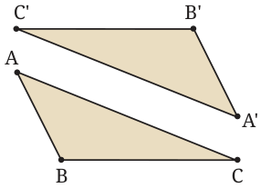<figcaption>Fig. 6.21A Fig. 6.21B</figcaption></figure>
<figure class="fig">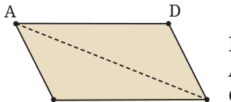</figure>
<div class="callout"><p>In Fig. 6.21A, triangles ABC and A'B'C' are congruent. They fit together as in Fig. 6.21B to make a parallelogram.</p></div>
<p>Do you see why the two triangles fit together to make a parallelogram? (If you study the angles in the figure (e.g., \(\angle B'C'A'\) and \(\angle BCA\)), you will see why this is so. Keep in mind the criterion by which we check whether two lines are parallel.) We already know, area of a parallelogram: base \(\times\) height = bh. So, the formula for the area a triangle is \(\frac{1}{2}\) (base \(\times\) height) \(= \frac{1}{2} bh\). A property of the median of a triangle. From the above formula we reach a simple but beautiful conclusion about any of the medians of a triangle.</p>
<figure class="fig">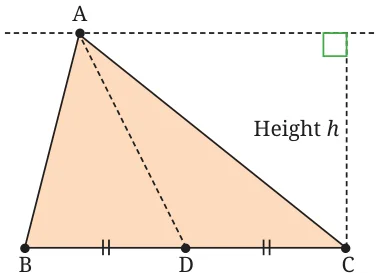</figure>
<p>A median is the line segment joining a vertex of the triangle to the midpoint of the opposite side. In Fig. 6.22, AD is a median of \(\triangle ABC\). Consider ΔABD and ΔACD. Their bases are equal (BD = DC), and they have equal height h. Using the formula for the area of a triangle, Base \(BC = 2a\) units we see that they have equal Fig. 6.22 area \(\frac{ah}{2}\) sq. units! We state this as a theorem.</p>
<p>Theorem: A median of a triangle divides it into two triangles with equal area. Does this come as a surprise? It should! After all, ΔABD and ΔACD are (in general) differently shaped (i.e., not congruent to each other). But we have just proved that they have the same area!</p>
<div class="callout"><p class="callout-title">Think and Reflect</p>
<p>Since \(\triangle ABD\) and \(\triangle ACD\) have equal area, you may wonder - Can we ­divide \(\triangle ABD\) using straight cuts into two or more pieces that we can then rearrange to exactly cover \(\triangle ACD\)? What do you think? Is it possible?</p>
<p>We shall spoil the surprise by revealing that it is possible. But we will not tell you the least number of pieces required. Try to find the answer!</p>
</div>
<div class="callout"><p class="callout-title">Think and Reflect</p>
<p>Suppose we are given two polygons P and Q with equal area. Will it always be possible to divide one of them using straight cuts into two or more pieces and then rearrange the pieces to exactly cover the other polygon? Try this out for familiar shapes, e.g.,</p>
<ol>
<li>A square and non-square rectangle with equal area,</li>
<li>Two triangles with different shapes but equal area,</li>
<li>A triangle and a square with equal area.</li>
</ol>
<p>Formulate a conjecture of your own about this.</p>
</div>
<div class="callout"><p class="callout-title">Think and Reflect</p>
<p>Think of various rectangles with perimeter 40 units (the sides do not have to be integers).</p>
<ol>
<li>How many such rectangles are there?</li>
<li>Among them, is there one whose area is the largest? What are its dimensions?</li>

<li>Among all these rectangles, is there one whose area is the smallest?</li>
</ol>
<p>What are its dimensions? Do either of these answers come as a surprise to you?</p>
</div>
<h3 id="s-6-8-1-heron-s-formula">6.8.1 Heron’s formula</h3>
<p>You already know a formula for the area of a triangle (half base times height). Are there other formulas for the area of a triangle? There are several. For now we mention Heron’s formula, discovered by the Greek mathematics and inventor, Heron. He taught at the Museum in Alexandria, a city in ancient Egypt located on the banks of the Nile. The formula states that if \(\triangle ABC\) has side lengths \(BC = a\), \(CA = b\), and \(AB = c\), then its area can be found as follows. First, we compute the semi-perimeter, s which is half the perimeter: \(s = \frac{1}{2}\) (a \(+ b +\) c). Then the area ( \(\triangle\) ABC) is given by</p>
<p>\(\sqrt{s(s-a)(s-b)(s-c)}\).</p>
<p>I am sure you will find the formula extremely surprising and strange looking! Let us test it against some known cases. Example 3: An equilateral triangle with side a units.</p>
<p>All three sides have length a, so the semi-perimeter is \(s = \frac{13}{22}\) (a \(+ a +\) a) \(= a\) units. Heron’s formula now yields, area of triangle = Let us check this against the ‘half sq. units base times height’ formula. Let h units be the height of the triangle. Then, by the Baudhāyana - Pythagoras theorem,</p>
<figure class="fig">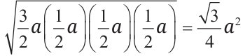</figure>
<div class="mathblock"><p>\(h^2 = a^2 - \frac{a^2}{4} = \frac{3a^2}{4}\), \(\therefore h = \frac{\sqrt{3}}{2} a\).</p></div>
<figure class="fig">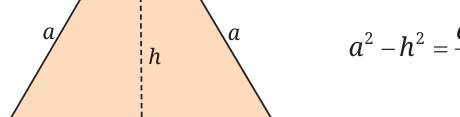<figcaption>Fig. 6.23</figcaption></figure>
<p>So the area is \(\frac{1}{2} \times a \times \frac{\sqrt{3}}{2} a = \frac{\sqrt{3}}{4} a^2\) sq. units. Same formula!</p>
<p>Note: Notice the symbol ‘ \(\therefore\) ’. This symbol is used regularly by mathematicians; it means and is read as ‘therefore’. Example 4: An isosceles triangle with equal sides a units and base 2b units. The semi-perimeter is \(s = \frac{1}{2}(a + a + 2b) = a + b\) units. Heron’s formula now yields,</p>
<p>area of the triangle \(= \sqrt{(a+b)(a+b-a)(a+b-a)(a+b-2b)} = b\sqrt{a^2 - b^2}\) sq. units.</p>
<p>Let us check this against the ‘half base times height’ formula. Let h units be the height of the triangle. Then, by the Baudhāyana - Pythagoras theorem,</p>
<figure class="fig">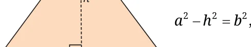</figure>
<div class="callout"><p>\(h^2 = a^2 - b^2\), \(\therefore h = \sqrt{a^2 - b^2}\).</p></div>
<p>So the area is \(\frac{1}{2} \times \sqrt{a^2 - b^2} \times 2b = b\sqrt{a^2 - b^2}\) sq. units, the same as earlier.</p>
<p>Example 5: A triangle with sides 3 units, 4 units and 5 units. The semi-perimeter is \(s = \frac{1}{2} (3 + 4 +5) = 6\) units. Heron’s formula now yields,</p>
<p>area of triangle \(= \sqrt{6 \times (6-3) \times (6-4) \times (6-5)} = \sqrt{6 \times 3 \times 2 \times 1} = \sqrt{36} = 6\) sq. units.</p>
<figure class="fig">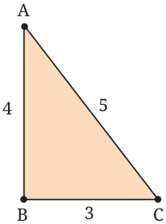</figure>
<p>Let us check this against the ‘half base times height’ base \(= 3\) units, height \(= 4\) units, 1 1 so the area is \(\frac{1}{2}\)(base \(\times\) height) \(= \frac{1}{2}(3 \times 4) = 6\) sq. units, the same as earlier.</p>
<p class="caption">Fig. 6.25</p>
<p>We get the correct result in each case. You may wonder how Heron’s formula is proved. There are many proofs known; one of them uses the Baudhāyana - Pythagoras theorem and repeated use of the ‘difference-of-two-squares’ formula</p>
<p>\(a^2 - b^2 = (a-b)(a+b)\). We will study some of these proofs in Grade 10. There are two other such formulas for the area of a triangle. Both have a connection with circles. See Fig. 6.26. Given any triangle ABC, there is exactly one circle that passes through its three vertices. This is called the circumcircle of \(\triangle ABC\). There is also exactly one circle that fits tightly in the triangle, touching its three sides. This is called the incircle of \(\triangle ABC\).</p>
<figure class="fig">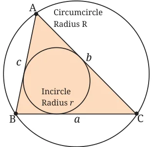</figure>
<p>Let the sides of \(\triangle ABC\) be a, b, and c. Let the radius of the circumcircle be R. Let the radius of the incircle be r. Then we have the following two formulas for the area: Area of \(\triangle ABC = \frac{abc}{4R}\).</p>
<p>Area of \(\triangle ABC = \frac{r(a+b+c)}{2}\).</p>
<p>Both formulas have a beautiful symmetry about them! The proof of the second formula requires a result that you will study in Grade 10.</p>
<h3 id="s-brahmagupta-s-formula-for-the-area-of-a-cyclic-4-gon">Brahmagupta’s Formula for the Area of a Cyclic 4-gon</h3>
<p>We have seen how to find the area of a triangle given the lengths of its three sides. The natural question then is: how can we find the area of a 4-gon given the lengths of its four sides? Earlier we asked, can we find the area of a parallelogram if we know only the lengths of its sides? The answer is: No. In the same way we ask: can we find the area of a 4-gon if we only know the lengths of its sides? The figures below reveal the answer to this question. The problem (Fig. 6.27) is about a 4-gon whose sides are known to be 3, 3, 3, 3 (it is a ‘rhombus’). As you can see, the areas of the three figures are different. (We drew the figures using GeoGebra and found the areas using the ‘Area’ tool. Please try this exercise yourself, or by using four rods joined together at their ends.)</p>
<figure class="fig">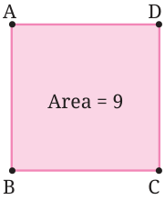<figcaption>Fig. 6.27: The area of a 4-gon cannot be found only from the lengths of its sides</figcaption></figure>
<figure class="fig">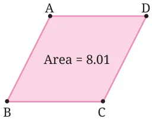</figure>
<figure class="fig side-fig">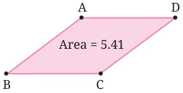</figure>
<p>So we cannot find the area of a 4-gon only from the lengths of its four sides; we need more information. This could be one angle of the 4-gon, or the length of one diagonal, or the angle at which the diagonals cut each other, etc. Or it could be a key geometric property of the figure. One such property is that the 4-gon is a cyclic 4-gon. In 628 CE, Brahmagupta \((598 - 668\) CE) discovered a wonderful formula for the area of a cyclic 4-gon.</p>
<figure class="fig">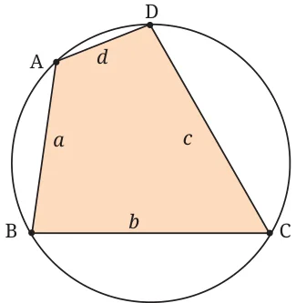<figcaption>Fig. 6.28: A cyclic 4-gon</figcaption></figure>
<p>The formula states that if the sides of the cyclic 4-gon have lengths a, b, c, d, and the semi-perimeter s is \(s = \frac{1}{2}\) (a \(+ b + c +\) d) , then: Areaof4-gon = (s - a)(s - b)(s - c)(s - d).</p>
<p>It is an amazing and beautiful formula! Does it not remind us of Heron’s formula for the area of a triangle?</p>
<p>We can verify that the formula works out correctly in various special cases. Example 6: Verify Brahmagupta’s formula for the case of a rectangle. All rectangles are cyclic, so Brahmagupta’s formula should apply. Let the sides of the rectangle be a, b. Then \(s = \frac{1}{2} (2a + 2b) = a + b\) , so the formula yields:</p>
<p>Area \(= \sqrt{(a+b-a)(a+b-b)(a+b-a)(a+b-b)} = \sqrt{b \cdot a \cdot b \cdot a} = ab\),</p>
<p>which is correct. Please check out the formula against other special cases. Example 7: Verify Brahmagupta’s formula for the case of an isosceles trapezium.</p>
<div class="callout"><p>All isosceles trapezia are cyclic, hence the formula should apply. The perimeter is \(2a + 2b + 2c\), so \(s = a + b + c\). Hence, the area as given by the formula should be \(\sqrt{(s - 2a)(s - 2b)(s - c)(s - c)}\).</p></div>
<figure class="fig">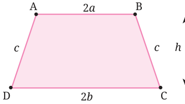<figcaption>Fig. 6.29: Isosceles trapezium Since s – 2a = c + b – a, s – 2b = c + a</figcaption></figure>
<div class="callout"><p>\(- 2b\), \(s - c = a + b\) the above formula simplifies to</p></div>
<p>\((a + b)\sqrt{(c + b - a)(c + a - b)} = (a + b)\sqrt{c^2 - (b - a)^2}\).</p>
<p>If we imagine a perpendicular dropped from B to the base CD, its length (recall the Baudhāyana-Pythagoras theorem) is \(\sqrt{c^2 - (b - a)^2}\). Hence, the area is \((a + b)h\). We get exactly the same formula if we recall that the area of an isosceles trapezium is half the sum of the parallel sides times the distance between the parallel sides.</p>
<h2 id="s-special-cases-and-generalisation-in-mathematics">Special Cases and Generalisation in Mathematics</h2>
<p>The notion of a ‘special case’ occurs often in higher mathematics. A special case results from a general result whenever we apply some extra condition. We list a few such examples. The general result is also called a generalisation of the special case. The process of generalisation is an extremely important part of mathematics. Example: A square is a special case of a rectangle.</p>
<p>So, the formula for the area of a square (\(A = a^2\)) is a special case of the formula for the area of a rectangle (A = ab) obtained by putting \(b = a\). Similarly, the formula for the perimeter of a square is a special case of the formula for the perimeter of a rectangle. Example: An isosceles right-angled triangle is a special case of a right-angled triangle. So, from any theorem about all right-angled triangles, we can extract a special case that applies to isosceles, right-angled triangles. Take a right-angled triangle ABC with \(\angle C = 90 ^{\circ}\) ; then we have \(a^{2} + b^{2} = c^{2}\) (this is the Baudhāyana - Pythagoras theorem). Let us take a special case of this with \(a = b\) (this corresponds to the triangle being isosceles). We get \(a^{2} + b^{2} = c^{2}\), i.e., \(c^2 = 2a^2\) and so \(c = a\sqrt{2}\). The general theorem \((a^{2} + b^{2} = c^{2})\) has reduced to this special case ( \(c = a\sqrt{2}\)\) for isosceles right-angled triangles (with \(a =\) b). Here is another example. Compare the following identities from algebra:</p>
<div class="mathblock"><p>\((a+b)^2 = a^2 + b^2 + 2ab\), \((a+b+c)^2 = a^2 + b^2 + c^2 + 2ab + 2bc + 2ca\).</p></div>
<p>Can you see that the first identity is a special case of the second one (put \(c = 0\) in the second identity), and the second identity is a generalisation of the first one? You will meet many examples of special cases and generalisation in later years.</p>
<p>Brahmagupta’s Formula Generalises Heron’s Formula</p>
<p>The similarity in appearance between Heron’s formula and Brahmagupta’s formula is not an accident. How? Brahmagupta’s formula generalises Heron’s formula. That is, we can think of Heron’s formula as a special case of Brahmagupta’s formula. A triangle with sides a, b, c can be regarded as a ‘special case’ of a 4-gon ABCD whose fourth side d has zero length (d \(= 0)\). So we have \(AB = a\), \(BC = b\), \(CD = c\), which means in effect that vertices A and D coincide. (If the vertices represent planets, then this would be a case of two planets colliding with each other and forming a single large planet! This actually happened in the early history of the solar system.) Since any triangle is cyclic (given any three points not in a straight line, we can draw a circle through them), this 4-gon is cyclic too. So, Brahmagupta’s formula must apply to this 4-gon. Let us see what emerges from this. We first compute the semi-perimeter of the 4-gon (keep in mind that \(d = 0)\):</p>
<div class="mathblock"><p>\(s = \frac{1}{2}(a + b + c + 0) = \frac{1}{2}(a + b + c)\).</p></div>
<p>We see that s is the same as the semi-perimeter of the given triangle. Now we apply Brahmagupta’s formula:</p>
<figure class="fig">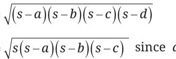</figure>
<p>Areaoftriangle =</p>

<p>This is Heron’s formula! Brahmagupta’s formula may thus be viewed as a generalisation of Heron’s formula.</p>
</article>
<nav class="pager"><a class="" data-nav="prev" href="../../06-measuring-space-perimeter-and-area/08-area-of-a-parallelogram-6.7/index.html"><span class="dir">← Previous</span><span class="t">6.7 Area of a Parallelogram</span><span class="ch">Measuring Space Perimeter and Area</span></a><a class="nx" data-nav="next" href="../../06-measuring-space-perimeter-and-area/10-squaring-a-rectangle-6.9/index.html"><span class="dir">Next →</span><span class="t">6.9 Squaring a Rectangle</span><span class="ch">Measuring Space Perimeter and Area</span></a></nav>
</main><footer class="site">Generated from the source textbook PDFs · text, figures and exercises belong to their respective publishers.</footer><script defer src="https://cdn.jsdelivr.net/npm/katex@0.16.11/dist/katex.min.js" crossorigin="anonymous"></script>
<script defer src="https://cdn.jsdelivr.net/npm/katex@0.16.11/dist/contrib/auto-render.min.js" crossorigin="anonymous"
  onload="renderMathInElement(document.body,{delimiters:[
    {left:'\\(',right:'\\)',display:false},
    {left:'$$',right:'$$',display:true},
    {left:'\\[',right:'\\]',display:true}],throwOnError:false,ignoredTags:['script','noscript','style','textarea','pre','code']})"></script>
<script src="../../../assets/book.js"></script>
<script defer src="../../../../assets/search.js?v=1789782770"></script>
<script defer src="../../../../assets/screenshot.js?v=2"></script>
</body>
</html>
